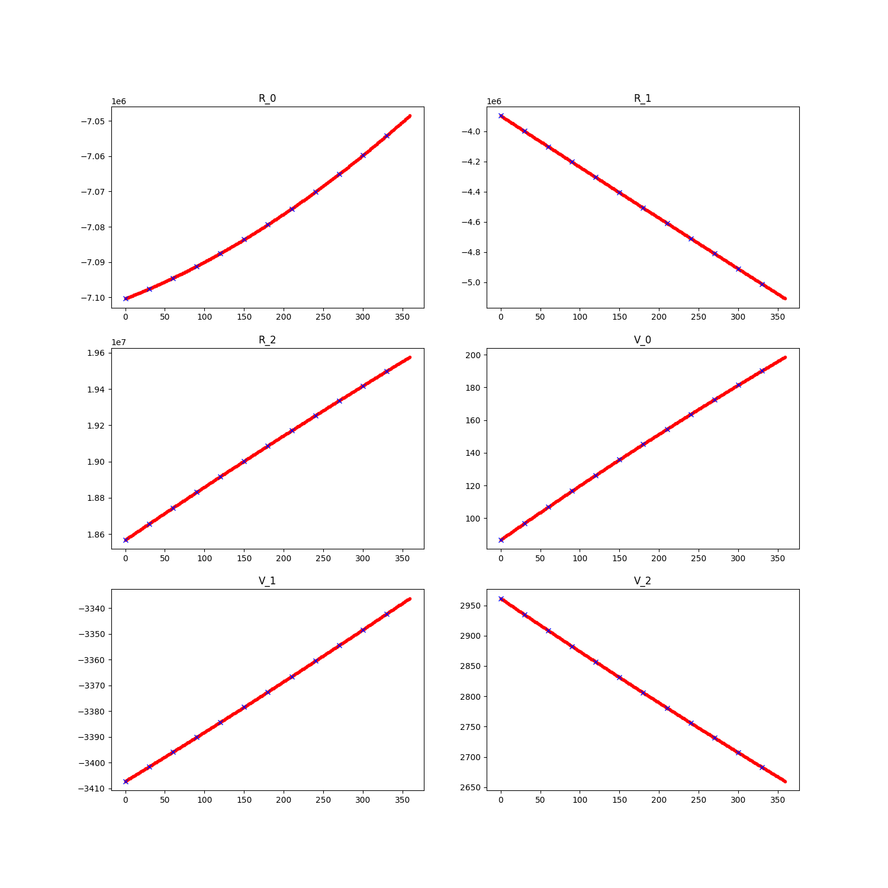

Note
Click here to download the full example code
Interpolation¶

import numpy as np
import matplotlib.pyplot as plt
from sorts.profiling import Profiler
from sorts.propagator import SGP4
from sorts import interpolation
p = Profiler()
prop = SGP4(
settings = dict(
out_frame='TEME',
),
profiler = p,
)
state0 = np.array([-7100297.113,-3897715.442,18568433.707,86.771,-3407.231,2961.571])
t = np.arange(0.0,360.0,30.0)
mjd0 = 53005
states = prop.propagate(t, state0, mjd0, A=1.0, C_R = 1.0, C_D = 1.0)
interpolator = interpolation.Legendre8(states, t)
t_f = np.arange(0.0,360.0,1.0)
finer_states = interpolator.get_state(t_f)
fig = plt.figure(figsize=(15,15))
for ind in range(3):
ax = fig.add_subplot(321 + ind)
ax.plot(t_f, finer_states[ind,:],".r")
ax.plot(t, states[ind,:],"xb")
ax.set_title(f'R_{ind}')
ax = fig.add_subplot(324 + ind)
ax.plot(t_f, finer_states[ind+3,:],".r")
ax.plot(t, states[ind+3,:],"xb")
ax.set_title(f'V_{ind}')
plt.show()
Total running time of the script: ( 0 minutes 0.489 seconds)